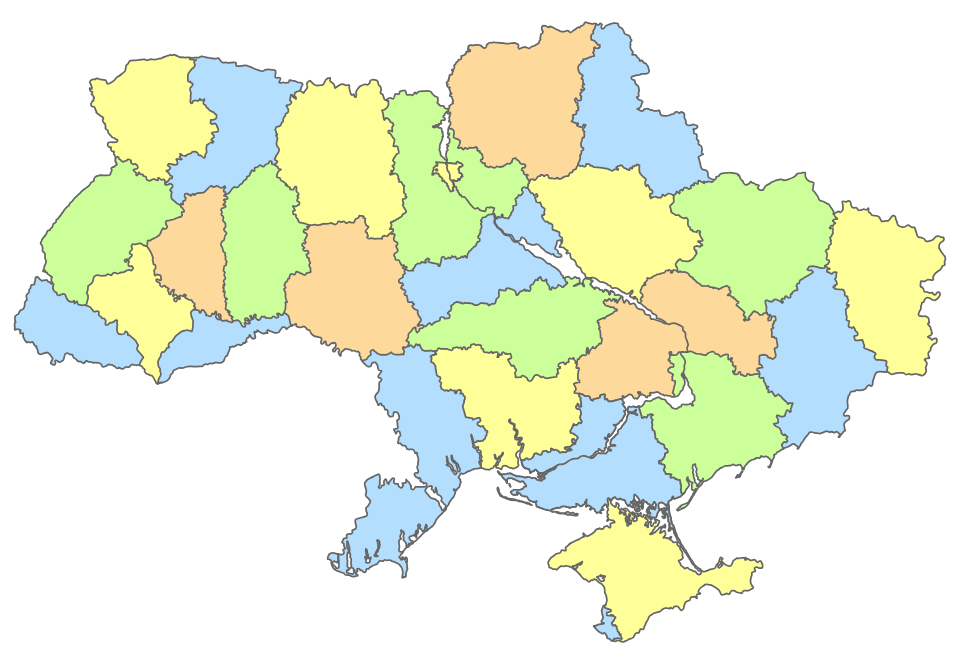

Карта областей України
Натисніть на область на карті, щоб відкрити її сторінку у Вікіпедії.

Карта: Amakuha, Wikimedia Commons, CC BY-SA 3.0. Видалено демонстраційні написи й додано клікабельні області.
Натисніть на область на карті, щоб відкрити її сторінку у Вікіпедії.

Карта: Amakuha, Wikimedia Commons, CC BY-SA 3.0. Видалено демонстраційні написи й додано клікабельні області.